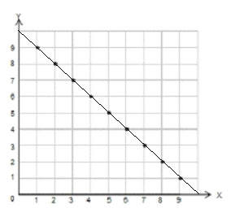
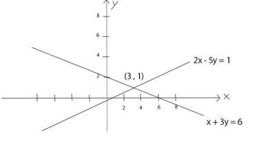

ระบบสมการสองตัวแปร
ระบบสมการสองตัวแปร คือ สมการที่มีตัวแปรสองตัว เลขชี้กำลังของตัวแปรแต่ละตัวเป็นหนึ่งและไม่มีการคูณกันของตัวแปรโดย คำตอบของสมการเชิงเส้นสองตัวแปรที่มี x และ y เป็นตัวแปร คือ ค่า x และ y ที่ทำให้สมการเป็นจริง
สมการสองตัวแปร อยู่ในรูป Ax + By = C เมื่อ ACB เป็นค่าคงตัวและ AกับB ไม่เป็นศูนย์พร้อมกัน
เช่น x + y = 10 ถ้า x และ y เป็นจำนวนนับ จะได้คู่อันดับ (x,y) ดังนี้ (0,10), (1,9), (2,8), (3,7), (4,6), (5,5), (6,4) , (7,3) , (8,2) , (9,1), (10,0) เมื่อนำคู่อันดับเหล่านี้มาเขียนกราฟจะได้ 5 จุดเรียงกันให้อยู่ในแนวเส้นตรง และถ้า x และ y เป็นจำนวนจริง กราฟของสมการ x+y = 6 จะเป็นเส้นตรงดังรูป
ระบบสมการเชิงเส้นสองตัวแปร
บทนิยาม ให้ a, b, c, d, e และ f เป็นจำนวนจริงใด ๆ ที่ a, b ไม่เป็นศูนย์พร้อมกันและ c, d ไม่เป็นศูนย์พร้อมกัน เรียก ระบบสมการ
ax + by = e
cx + dy = f
ว่า “ระบบสมการเชิงเส้นสองตัวแปร”
เรียก a และ c ว่า เป็นสัมประสิทธิ์ของ x
เรียก b และ d ว่า เป็นสัมประสิทธิ์ของ y
คำตอบของระบบสมการเชิงเส้นสองตัวแปร คือ คู่อันดับ (x, y) ที่สอดคล้องกับสมการ ทั้งสอง หรือ ทำให้สมการทั้งสองเป็นจริง
ข้อสังเกต ระบบสมการเชิงเส้น 2 ตัวแปร อาจไม่มีคำตอบ หรือมีคำตอบเดียว หรือหลายคำตอบก็ได้
วิธีการแก้ระบบสมการเชิงเส้นสองตัวแปร
วิธีที่ 1 โดยการใช้กราฟ ดังกล่าวแล้วในหัวข้อระบบสมการสองตัวแปร
วิธีที่ 2 โดยวิธีการแทนที่ ประกอบด้วยขั้นตอนดังต่อไปนี้
ขั้นที่ 1 เลือกสมการจากโจทย์มา 1 สมการ
ขั้นที่ 2 จัดสมการให้ x อยู่ในเทอมของ y หรือ y อยู่ในเทอมของ x
ขั้นที่ 3 นำค่า x หรือ y ไปแทนค่าในอีกสมการ แล้วหาค่า x และ y
วิธีที่ 3 โดยวิธีการกำจัดตัวแปร ประกอบด้วยขั้นตอนดังต่อไปนี้
ขั้นที่ 1 ทำสัมประสิทธิ์ของตัวแปรตัวใดตัวหนึ่งในสมการให้เท่ากัน หรือเป็นจำนวนตรงข้ามกันจะเป็นตัวแปร x หรือ y ก็ได้
ขั้นที่ 2 แล้วกำจัดตัวแปรตัวนั้น ก็จะเหลือตัวแปรตัวเดียวอาจเป็น x หรือ y
ขั้นที่ 3 นำค่า x หรือ y ไปแทนค่าในอีกสมการ แล้วหาค่าตัวแปรตัวที่เหลือ
ตัวอย่างที่1 จงหาคำตอบของระบบสมการ เมื่อกำหนดให้ x,y เป็นจำนวนจริงใดๆ
2x - 5y = 1 ..........(1)
x - 3y = 6 ..........(2)
ใช้วิธีที่ 1
จากกราฟจะเห็นว่า เส้นตรงที่ได้จากสมการ (1) และเส้นตรงที่ได้จากสมการ (2) นั้นตัดกันที่จุด (3, 1)
ตัวอย่างที่ 2 จงแก้ระบบสมการ
x + y = 8
x – y = 6
ใช้วิธีที่ 2
x + y = 8 ..........(1)
x – y = 6 ..........(2)
จาก (1) บวกด้วย – y ทั้งสองข้างของสมการได้
x + y – y = 8 – y
x = 8 – y ..........(3)
แทนค่า x จาก (3) ใน (2) ได้
(8 – y) – y = 6
8 – 2y = 6
บวกด้วย – 8 ทั้งสองข้างได้
– 8 + 8 – 2y = – 8 + 6
– 2y = – 2
คูณด้วย -1/2 ทั้งสองข้างได้
(– 2y)/2 = (– 2)/2
y = 1
จาก (1) แทน y = 1 ได้
x + 1 = 8
บวกด้วย – 1 ทั้งสองข้างได้
x + 1 – 1 = 8 – 1
x = 7
ดังนั้น คำตอบของระบบสมการ คือ (7, 1)
ใช้วิธีที่ 3
x + y = 8 ..........(1)
2 x – 2y = 12 ..........(2)
(2)/2; (2 x – 2y) /2 = (12 )/2
x – y = 6 ..........(3)
(1) + (3) ; 2x = 14
x = 7
(1) – (3) ; 2y = 2
y = 1
ดังนั้น คำตอบของระบบสมการ คือ (7, 1)